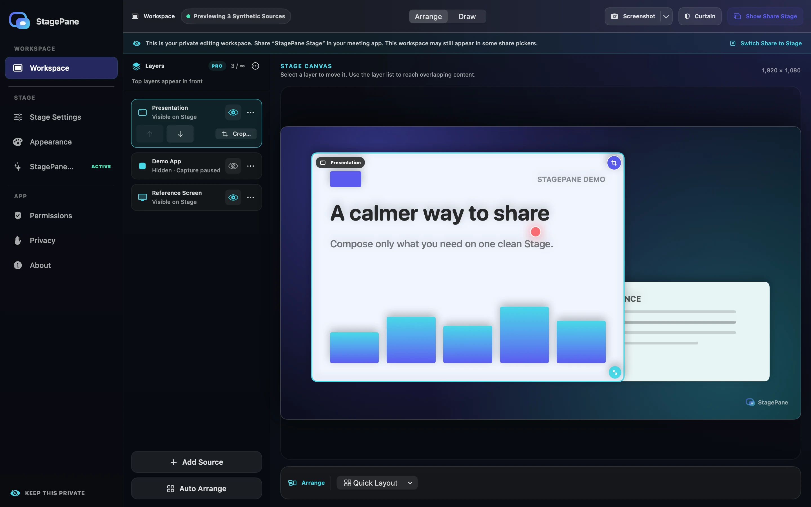
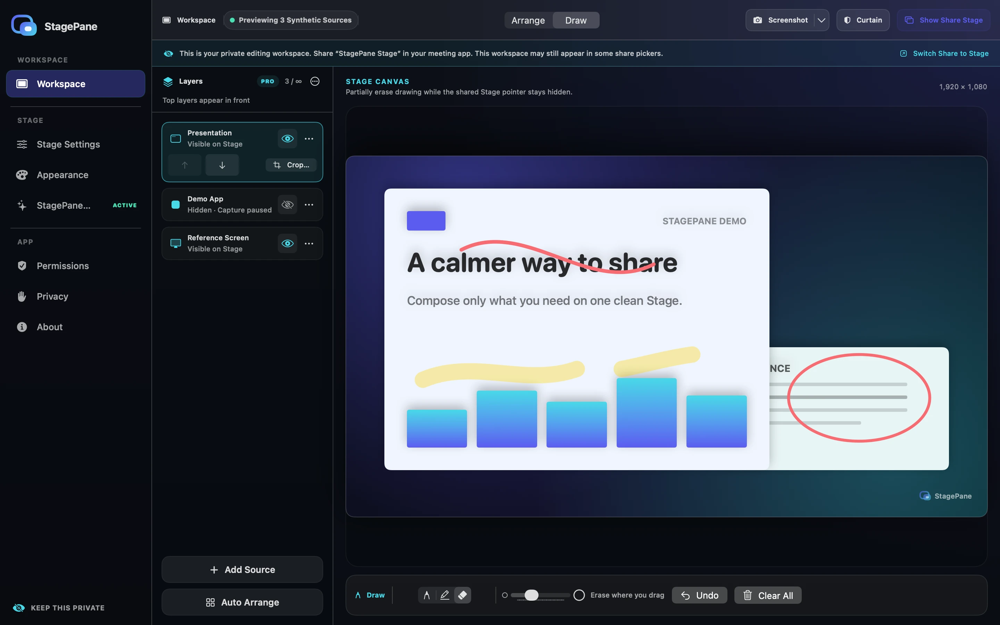
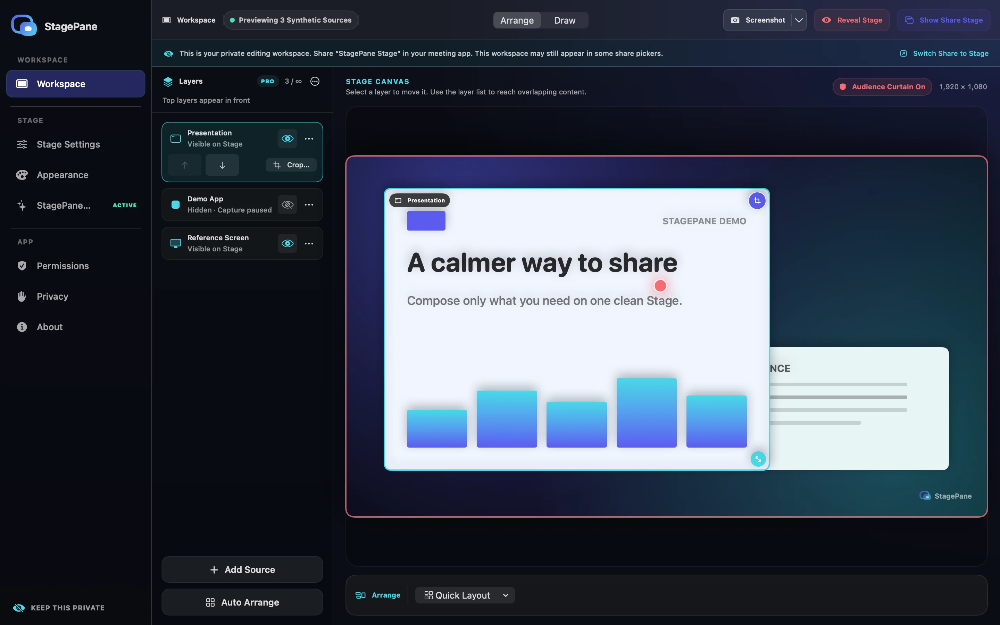
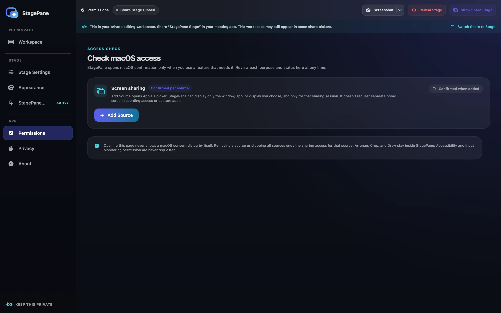
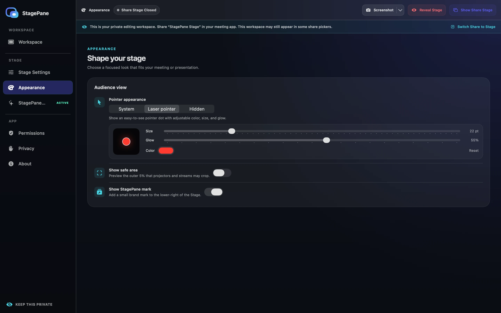
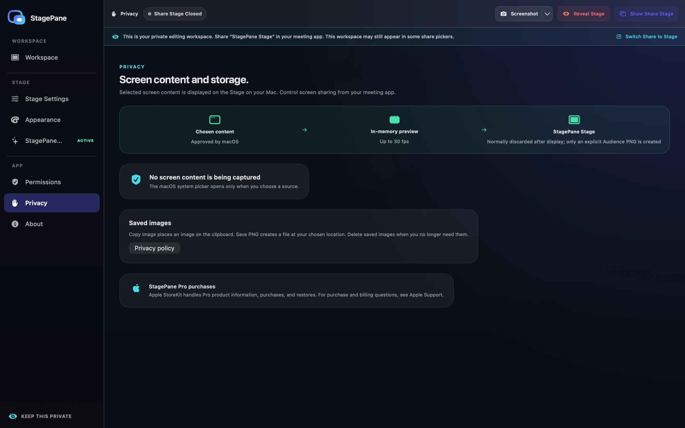
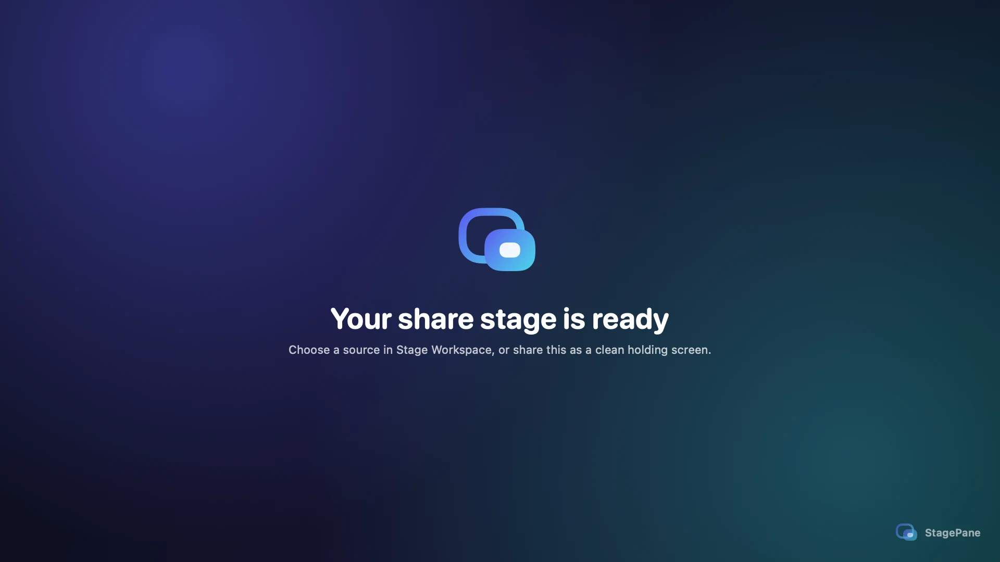
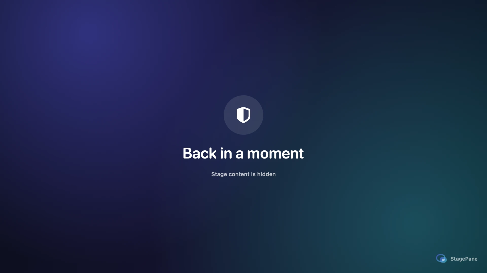

Included Free · Arrange
Compose three sources into one clear Stage.
Move, freely resize, reorder, or apply a Quick Layout directly on the Canvas. The laser pointer appears only over the frontmost source.

Available on the Mac App Store
StagePane creates a dedicated window you can select for screen sharing.
Keep the controls on your Mac and show your audience only the prepared Stage.
見せたいものだけ、ひとつのステージへ。
 Ready for your content
Share this window
Ready for your content
Share this window
A prepared, dedicated window for your audience.
A large live editor with Sources and settings together in one sidebar.
Live workspace
The audience Stage contains the composition, never editor controls. Arrange and Draw update it live; each layer's crop button opens a private draft that changes the Stage only when you apply it.
Included Free · Arrange
Move, freely resize, reorder, or apply a Quick Layout directly on the Canvas. The laser pointer appears only over the frontmost source.

Included Free · Draw
Keep Pen, translucent Highlighter, and a size-adjustable partial Eraser in one dock. Erasing can be undone exactly, and Draw hides the audience pointer.

Built for calm sharing
Separate what you share from where you control it, reducing uncertainty and mistakes while presenting.
Put only audience content in the chrome-free Stage. Arrange, crop, and draw on the Workspace Canvas; manage sources and settings from its Docker-style sidebar. “Keep Private” is guidance, not a capture boundary, so verify the title and share the exact Stage window—not the full display or app.
Cover the Stage with ⇧⌘H without bringing its window to the front, and show a message of up to 80 characters. The Curtain itself does not pause capture; use Stop All to end it.
Add sources one at a time with Apple's system picker, then pause, resume, replace, or remove each one independently. Pause stops that stream and makes its layer transparent in the Stage, private Workspace, and Audience PNG output while preserving placement, crop, and z-order. Resume reveals it only after a new complete frame arrives. Remove asks before discarding the source's pixels and retained layer state. Free supports four simultaneous sources, while the one-time StagePane Pro purchase removes StagePane's source-count limit. The number that can run in practice depends on Mac performance and operating-system constraints. On the large Canvas, arrange freely, open cropping from each layer's crop button, or draw with a pen, translucent highlighter, and size-adjustable partial eraser whose action can be undone exactly. Crop shows only its target layer full-size in the private Workspace and keeps edits as a draft. The public Stage retains that layer's previously applied crop until Apply Crop; Cancel discards the draft. Crop is a composition mask: whenever the source stream is running, ScreenCaptureKit still handles the complete picker-approved source. Applied crop rectangles remain only in app memory, including while a disconnected layer waits for Select Again, until Remove, confirmed Stop All, or quit. Draw automatically hides the audience pointer; returning to Arrange restores the selected style. Each choice authorizes only that shared content for its capture session. StagePane requests no separate broad Screen Recording, Accessibility, or Input Monitoring permission and forwards no input to source apps.
Explicitly copy or save a PNG of the Audience Stage at 16:9 (1920×1080), 4:3 (1440×1080), 9:16 (1080×1920), or 1:1 (1080×1080). It includes current content or Curtain, ink, mark, the safe area when enabled, and the pointer when visible—never private Workspace chrome.
Choose Aurora, Midnight, Paper, or Studio, plus a system, laser, or hidden pointer. Adjust the laser pointer's color, size, and glow; it appears only on the frontmost source. A translucent StagePane mark appears in the lower-right of the holding screen, shared content, and Curtain. The one-time StagePane Pro purchase lets you hide it.
There is no recorder, upload path, account, advertising, or analytics SDK. Frames are not saved automatically; only your explicit Copy Image or Save PNG action exports one clean Stage image locally.
Read the privacy policy →Real interface
These screens were rendered by StagePane itself using only synthetic data. Keep the Workspace on your Mac and share only the exact Stage window in your meeting app.






How it works
StagePane does not create a virtual display or alternate desktop. Select it in your meeting app as an ordinary window.
StagePane opens two windows: the clean Share Stage and one private Workspace with Canvas, Sources, and settings in its sidebar.
Choose Add Source and approve one window, app, or display for that capture session. Choosing an app can include multiple windows owned by it; choose one window for the narrowest scope. Free supports four simultaneous sources; the one-time StagePane Pro purchase removes StagePane's source-count limit. The number that can run in practice depends on Mac performance and operating-system constraints.
Move, resize, or draw on the private Workspace, then select the exact “StagePane Stage” window in your meeting app and reveal the Curtain.
Use Stop All to end every stream and remove every layer, including disconnected layers whose placement and crop were retained. The Curtain alone does not stop capture.
Privacy by design
StagePane displays chosen content from memory and discards it without automatic saving. Only an explicit Copy Image or Save PNG action exports one clean Stage image locally. The meeting app performs the actual transmission.
Read the full privacy policy →
Security
Do not post suspected vulnerabilities in a public issue. Email support@hinoshiba.com with “StagePane Security” in the subject. Before 1.0, the latest published release is the only version eligible for security fixes.
Support
General usage questions and reproducible defects are accepted through GitHub Issues. For private or other inquiries, email support@hinoshiba.com.
Create a GitHub issueRestore Stage Workspace or the Share Stage from the menu bar. ⇧⌘H toggles the Curtain; ⇧⌘P opens Add Source.
Use Select Again on the disconnected layer to reconnect it with the same placement and crop. Closing the Share Stage keeps layers and capture in the Workspace; use Stop All when you want to end them completely.
Share the macOS and StagePane versions, steps that reproduce the problem with synthetic data, the expected result, and the actual result.
Do not post real screen frames, private window titles, meeting URLs, tokens, TCC databases, or unredacted diagnostics.
Build from source
Install macOS 14 or later and Xcode 16 or later, then clone the repository. StagePane targets both Apple Silicon and Intel Macs.
The official release is available on the Mac App Store. The output of ./build.sh uses the same App Sandbox and Arrange/Crop/Draw feature set as the Store build, but it is an ad-hoc-signed, unnotarized development build—not an official binary or distributable artifact.
$ git clone https://github.com/
hinoshiba/StagePane.git
$ cd StagePane
$ ./build.sh
$ open dist/StagePane.appLicense: The source code and the copyright in the logo and icon artwork are available under Apache License 2.0. The license does not grant the right to use the StagePane name or logo as a trademark suggesting official status or affiliation.